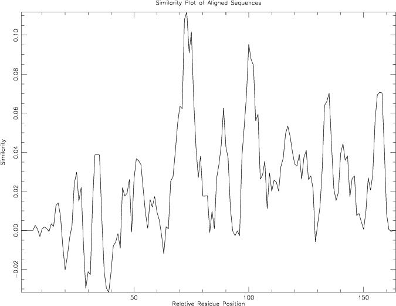

|
|
plotcon |
Please help by correcting and extending the Wiki pages.
plotcon reads a sequence alignment and draws a plot of the sequence conservation within windows over the alignment.
Sequence conservation is calculated for windows of a specified length over the alignment. Within a window, the similarity of any one position is taken to be the average of all the possible pairwise substitution scores of the bases or residues at that position. The pairwise substitution scores are taken from the specified similarity matrix. The average of the position similarities within the window is plotted.
The average similarity is calculated by:
Av. Sim. = sum( Mij*wi + Mji*wj )
-------------------
(Nseq*Wsize)*((Nseq-1)*Wsize)
sum - over column*window size
w - sequence weighting
M - matrix comparison table
i,j - with respect to residue i or j
Nseq - number of sequences in the alignment
Wsize - window size
% plotcon -sformat msf globins.msf -graph cps Plot conservation of a sequence alignment Window size [4]: Created plotcon.ps |
Go to the input files for this example
Go to the output files for this example
Plot conservation of a sequence alignment
Version: EMBOSS:6.5.6.0
Standard (Mandatory) qualifiers:
[-sequences] seqset File containing a sequence alignment
-winsize integer [4] Number of columns to average alignment
quality over. The larger this value is, the
smoother the plot will be. (Any integer
value)
-graph xygraph [$EMBOSS_GRAPHICS value, or x11] Graph type
(ps, hpgl, hp7470, hp7580, meta, cps, x11,
tek, tekt, none, data, xterm, png, gif, pdf,
svg)
Additional (Optional) qualifiers:
-scorefile matrix [EBLOSUM62 for protein, EDNAFULL for DNA]
This is the scoring matrix file used when
comparing sequences. By default it is the
file 'EBLOSUM62' (for proteins) or the file
'EDNAFULL' (for nucleic sequences). These
files are found in the 'data' directory of
the EMBOSS installation.
Advanced (Unprompted) qualifiers: (none)
Associated qualifiers:
"-sequences" associated qualifiers
-sbegin1 integer Start of each sequence to be used
-send1 integer End of each sequence to be used
-sreverse1 boolean Reverse (if DNA)
-sask1 boolean Ask for begin/end/reverse
-snucleotide1 boolean Sequence is nucleotide
-sprotein1 boolean Sequence is protein
-slower1 boolean Make lower case
-supper1 boolean Make upper case
-scircular1 boolean Sequence is circular
-sformat1 string Input sequence format
-iquery1 string Input query fields or ID list
-ioffset1 integer Input start position offset
-sdbname1 string Database name
-sid1 string Entryname
-ufo1 string UFO features
-fformat1 string Features format
-fopenfile1 string Features file name
"-graph" associated qualifiers
-gprompt boolean Graph prompting
-gdesc string Graph description
-gtitle string Graph title
-gsubtitle string Graph subtitle
-gxtitle string Graph x axis title
-gytitle string Graph y axis title
-goutfile string Output file for non interactive displays
-gdirectory string Output directory
General qualifiers:
-auto boolean Turn off prompts
-stdout boolean Write first file to standard output
-filter boolean Read first file from standard input, write
first file to standard output
-options boolean Prompt for standard and additional values
-debug boolean Write debug output to program.dbg
-verbose boolean Report some/full command line options
-help boolean Report command line options and exit. More
information on associated and general
qualifiers can be found with -help -verbose
-warning boolean Report warnings
-error boolean Report errors
-fatal boolean Report fatal errors
-die boolean Report dying program messages
-version boolean Report version number and exit
|
| Qualifier | Type | Description | Allowed values | Default |
|---|---|---|---|---|
| Standard (Mandatory) qualifiers | ||||
| [-sequences] (Parameter 1) |
seqset | File containing a sequence alignment | Readable set of sequences | Required |
| -winsize | integer | Number of columns to average alignment quality over. The larger this value is, the smoother the plot will be. | Any integer value | 4 |
| -graph | xygraph | Graph type | EMBOSS has a list of known devices, including ps, hpgl, hp7470, hp7580, meta, cps, x11, tek, tekt, none, data, xterm, png, gif, pdf, svg | EMBOSS_GRAPHICS value, or x11 |
| Additional (Optional) qualifiers | ||||
| -scorefile | matrix | This is the scoring matrix file used when comparing sequences. By default it is the file 'EBLOSUM62' (for proteins) or the file 'EDNAFULL' (for nucleic sequences). These files are found in the 'data' directory of the EMBOSS installation. | Comparison matrix file in EMBOSS data path | EBLOSUM62 for protein EDNAFULL for DNA |
| Advanced (Unprompted) qualifiers | ||||
| (none) | ||||
| Associated qualifiers | ||||
| "-sequences" associated seqset qualifiers | ||||
| -sbegin1 -sbegin_sequences |
integer | Start of each sequence to be used | Any integer value | 0 |
| -send1 -send_sequences |
integer | End of each sequence to be used | Any integer value | 0 |
| -sreverse1 -sreverse_sequences |
boolean | Reverse (if DNA) | Boolean value Yes/No | N |
| -sask1 -sask_sequences |
boolean | Ask for begin/end/reverse | Boolean value Yes/No | N |
| -snucleotide1 -snucleotide_sequences |
boolean | Sequence is nucleotide | Boolean value Yes/No | N |
| -sprotein1 -sprotein_sequences |
boolean | Sequence is protein | Boolean value Yes/No | N |
| -slower1 -slower_sequences |
boolean | Make lower case | Boolean value Yes/No | N |
| -supper1 -supper_sequences |
boolean | Make upper case | Boolean value Yes/No | N |
| -scircular1 -scircular_sequences |
boolean | Sequence is circular | Boolean value Yes/No | N |
| -sformat1 -sformat_sequences |
string | Input sequence format | Any string | |
| -iquery1 -iquery_sequences |
string | Input query fields or ID list | Any string | |
| -ioffset1 -ioffset_sequences |
integer | Input start position offset | Any integer value | 0 |
| -sdbname1 -sdbname_sequences |
string | Database name | Any string | |
| -sid1 -sid_sequences |
string | Entryname | Any string | |
| -ufo1 -ufo_sequences |
string | UFO features | Any string | |
| -fformat1 -fformat_sequences |
string | Features format | Any string | |
| -fopenfile1 -fopenfile_sequences |
string | Features file name | Any string | |
| "-graph" associated xygraph qualifiers | ||||
| -gprompt | boolean | Graph prompting | Boolean value Yes/No | N |
| -gdesc | string | Graph description | Any string | |
| -gtitle | string | Graph title | Any string | |
| -gsubtitle | string | Graph subtitle | Any string | |
| -gxtitle | string | Graph x axis title | Any string | Relative Residue Position |
| -gytitle | string | Graph y axis title | Any string | |
| -goutfile | string | Output file for non interactive displays | Any string | |
| -gdirectory | string | Output directory | Any string | |
| General qualifiers | ||||
| -auto | boolean | Turn off prompts | Boolean value Yes/No | N |
| -stdout | boolean | Write first file to standard output | Boolean value Yes/No | N |
| -filter | boolean | Read first file from standard input, write first file to standard output | Boolean value Yes/No | N |
| -options | boolean | Prompt for standard and additional values | Boolean value Yes/No | N |
| -debug | boolean | Write debug output to program.dbg | Boolean value Yes/No | N |
| -verbose | boolean | Report some/full command line options | Boolean value Yes/No | Y |
| -help | boolean | Report command line options and exit. More information on associated and general qualifiers can be found with -help -verbose | Boolean value Yes/No | N |
| -warning | boolean | Report warnings | Boolean value Yes/No | Y |
| -error | boolean | Report errors | Boolean value Yes/No | Y |
| -fatal | boolean | Report fatal errors | Boolean value Yes/No | Y |
| -die | boolean | Report dying program messages | Boolean value Yes/No | Y |
| -version | boolean | Report version number and exit | Boolean value Yes/No | N |
!!AA_MULTIPLE_ALIGNMENT 1.0
../data/globins.msf MSF: 164 Type: P 25/06/01 CompCheck: 4278 ..
Name: HBB_HUMAN Len: 164 Check: 6914 Weight: 0.61
Name: HBB_HORSE Len: 164 Check: 6007 Weight: 0.65
Name: HBA_HUMAN Len: 164 Check: 3921 Weight: 0.65
Name: HBA_HORSE Len: 164 Check: 4770 Weight: 0.83
Name: MYG_PHYCA Len: 164 Check: 7930 Weight: 1.00
Name: GLB5_PETMA Len: 164 Check: 1857 Weight: 0.91
Name: LGB2_LUPLU Len: 164 Check: 2879 Weight: 0.43
//
1 50
HBB_HUMAN ~~~~~~~~VHLTPEEKSAVTALWGKVN.VDEVGGEALGR.LLVVYPWTQR
HBB_HORSE ~~~~~~~~VQLSGEEKAAVLALWDKVN.EEEVGGEALGR.LLVVYPWTQR
HBA_HUMAN ~~~~~~~~~~~~~~VLSPADKTNVKAA.WGKVGAHAGEYGAEALERMFLS
HBA_HORSE ~~~~~~~~~~~~~~VLSAADKTNVKAA.WSKVGGHAGEYGAEALERMFLG
MYG_PHYCA ~~~~~~~VLSEGEWQLVLHVWAKVEAD.VAGHGQDILIR.LFKSHPETLE
GLB5_PETMA PIVDTGSVAPLSAAEKTKIRSAWAPVYSTYETSGVDILVKFFTSTPAAQE
LGB2_LUPLU ~~~~~~~~GALTESQAALVKSSWEEFNANIPKHTHRFFILVLEIAPAAKD
51 100
HBB_HUMAN FFESFGDLSTPDAVMGNPKVKAHGKKVLGAFSDGLAHLDNLKGTFATLSE
HBB_HORSE FFDSFGDLSNPGAVMGNPKVKAHGKKVLHSFGEGVHHLDNLKGTFAALSE
HBA_HUMAN FPTTKTYFPHFDLSHGSAQVKGHGKKVADALTNAVAHVDDMPNALSALSD
HBA_HORSE FPTTKTYFPHFDLSHGSAQVKAHGKKVGDALTLAVGHLDDLPGALSNLSD
MYG_PHYCA KFDRFKHLKTEAEMKASEDLKKHGVTVLTALGAILKKKGHHEAELKPLAQ
GLB5_PETMA FFPKFKGLTTADQLKKSADVRWHAERIINAVNDAVASMDDTEKMSMKLRD
LGB2_LUPLU LFSFLKGTSEVPQNNPELQAHAGKVFKLVYEAAIQLQVTGVVVTDATLKN
101 150
HBB_HUMAN LHCDKLH..VDPENFRLLGNVLVCVLAHHFGKEFTPPVQAAYQKVVAGVA
HBB_HORSE LHCDKLH..VDPENFRLLGNVLVVVLARHFGKDFTPELQASYQKVVAGVA
HBA_HUMAN LHAHKLR..VDPVNFKLLSHCLLVTLAAHLPAEFTPAVHASLDKFLASVS
HBA_HORSE LHAHKLR..VDPVNFKLLSHCLLSTLAVHLPNDFTPAVHASLDKFLSSVS
MYG_PHYCA SHATKHK..IPIKYLEFISEAIIHVLHSRHPGDFGADAQGAMNKALELFR
GLB5_PETMA LSGKHAK..SFQVDPQYFKVLAAVIADTVAAGDAGFEKLMSMICILLRSA
LGB2_LUPLU LGSVHVSKGVADAHFPVVKEAILKTIKEVVGAKWSEELNSAWTIAYDELA
151 164
HBB_HUMAN NALAHKYH~~~~~~
HBB_HORSE NALAHKYH~~~~~~
HBA_HUMAN TVLTSKYR~~~~~~
HBA_HORSE TVLTSKYR~~~~~~
MYG_PHYCA KDIAAKYKELGYQG
GLB5_PETMA Y~~~~~~~~~~~~~
LGB2_LUPLU IVIKKEMNDAA~~~
|

EMBOSS data files are distributed with the application and stored in the standard EMBOSS data directory, which is defined by the EMBOSS environment variable EMBOSS_DATA.
To see the available EMBOSS data files, run:
% embossdata -showall
To fetch one of the data files (for example 'Exxx.dat') into your current directory for you to inspect or modify, run:
% embossdata -fetch -file Exxx.dat
Users can provide their own data files in their own directories. Project specific files can be put in the current directory, or for tidier directory listings in a subdirectory called ".embossdata". Files for all EMBOSS runs can be put in the user's home directory, or again in a subdirectory called ".embossdata".
The directories are searched in the following order:
The program is useful for visualising the quality of alignment along its length. This can give a qualitative insight into where there are regions of conservation in a group of aligned sequences.
Note that you should only compare the results of two runs of plotcon if you use the same window size in each. This is because the 'similarity score' units that are output are very sensitive to the size of the window. A large window (e.g. 100) gives a nice, smooth curve, and very low 'similarity score' units, whereas a small window (e.g. 4) gives a very spikey, noisy plot with 'similarity score' units of a round 1.00
plotcon does not distinguish between aligned and unaligned sets of sequences. If the input set of sequences is unaligned, the output will in most cases lack much biological meaning.
| Program name | Description |
|---|---|
| edialign | Local multiple alignment of sequences |
| emma | Multiple sequence alignment (ClustalW wrapper) |
| infoalign | Display basic information about a multiple sequence alignment |
| prettyplot | Draw a sequence alignment with pretty formatting |
| showalign | Display a multiple sequence alignment in pretty format |
| tranalign | Generate an alignment of nucleic coding regions from aligned proteins |
Please report all bugs to the EMBOSS bug team (emboss-bug © emboss.open-bio.org) not to the original author.